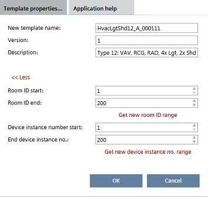

修改模板属性

这Template properties更改应用程序模板时，对话框在以下任务中可用：
- Configuration > Application configuration
- Configuration > Default values
- Configuration > I/O assignment

当应用程序模板或 ABT Pro 项目已创建时，手动输入或更改设备实例编号值和设备实例编号范围可能会导致设备实例编号重复。确保输入的值准确。
您可以检查重复的设备实例编号Building > Device list.
Checking for duplicate device properties
Modify properties in the Configuration component
- A project-specific template exists.
- Select the Configuration component.
- The component opens with the Application selection task.
- Select the Templates in project tab.
- All project-specific templates are displayed.
- Select a template.
- Click Open template.
- The Application configuration task opens.
- Click Template properties.
- Change the template properties as needed.
- Click OK.
Modify properties in the Building component
这Name, Description, Room ID start和Room ID end特性 也可以在里面修改Details应用程序模板的窗格。
Application template details
- A project-specific template exists.
- Go to Building .
- Open the Application & device overview task.
- Select the template.
- Open the Details pane.
- Select Naming.
- Change the template properties as needed.
财产 | 描述 |
|---|---|
新模板名称 | 应用程序模板的名称。 |
申请号 | 对于 Apogee 集成：应用程序模板的数字标识。仅当在应用程序类型中启用应用程序编号时才可见。 |
版本 | 显示应用程序模板的版本号。如果模板被锁定，则为只读。 Note |
描述 | 模板说明 |
Start room ID | 应用程序模板或 ABT Pro 项目的第一个可用房间 ID。 |
End room ID | 应用程序模板或 ABT Pro 项目的最后一个可用房间 ID。 |
获取新房间 ID 范围 | 将新房间 ID 范围分配给模板。 |
| 锁定机制。仅当在应用程序类型中启用应用程序编号时才可见。 |
设备实例号起始 | 要使用的第一个设备实例号。 |
终端设备实例编号 | 最后使用的设备实例号。 |
获取新设备安装。数字范围 | 为模板分配新的设备实例编号范围。 |